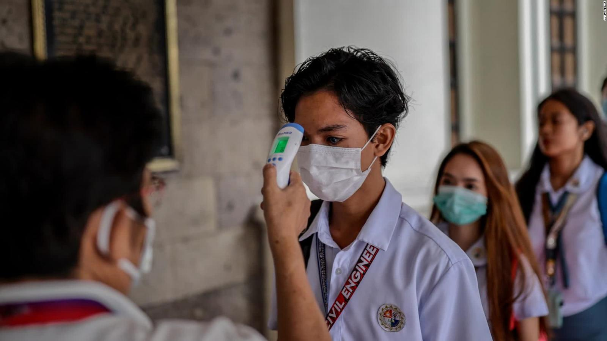

Diário Corona
Diário CoronaO vírus COVID-19 afeta pessoas diferentes de maneiras diferentes. COVID-19 é uma doença respiratória e a maioria das pessoas infectadas desenvolve sintomas leves a moderados e se recupera sem a necessidade de tratamento especial.
Pessoas que têm condições médicas subjacentes e pessoas com mais de 60 anos têm um risco maior de desenvolver doenças graves e morte.
Os sintomas comuns incluem:
Pessoas com sintomas leves que são saudáveis devem se isolar e entrar em contato com seu médico ou uma linha de informações da COVID-19 para obter orientação sobre testes e encaminhamento.
Pessoas com febre, tosse ou dificuldade em respirar devem ligar para o médico e procurar atendimento médico.
A doença de coronavírus (COVID-19) é uma doença infecciosa causada por um coronavírus recém-descoberto.
A maioria das pessoas infectadas com o vírus irá sentir uma doença respiratória leve a moderada e irá recuperar sem a necessidade de tratamento especial. Os idosos e aqueles com problemas médicos, como doenças cardiovas-culares, diabetes, doenças respiratórias crônicas e câncer, têm mais probabilidade de desenvol-ver doenças graves.
A melhor maneira de prevenir e desacelerar a transmissão é estar bem informado sobre o vírus COVID-19, a doença que causa e como se espa-lha. Proteja-se e a outros de infecções lavando as mãos ou usando um esfregão à base de álcool com frequência e sem tocar no rosto.
O vírus COVID-19 se espalha principalmente por gotículas de saliva ou secreção nasal quando uma pessoa infectada tosse ou espirra, por isso é importante que pratique etiqueta respiratória (tossindo para o cotovelo flexionado).
De momento, não existem vacinas ou tratamen-tos específicos para o COVID-19. Mas, existem muitos ensaios clínicos em andamento ava-liando possíveis tratamentos.
Para impedir a infecção e retardar a transmissão do COVID-19, faça o seguinte:
Atualmente, nenhum medicamento antiviral é recomendado para o tratamento com COVID-19. O tratamento é direcionado ao alívio dos sintomas e pode incluir: